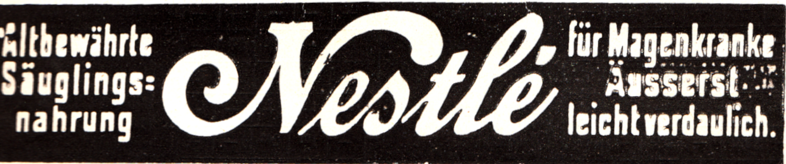
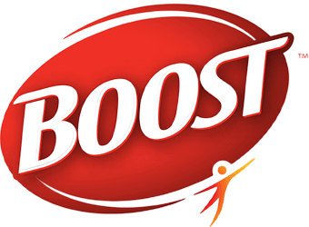

네슬레 Nestlé
네슬레(Nestlé)는 스위스 브베에 본사를 둔 세계 최대 규모의 식음료 다국적 기업이다.
최종 업데이트
네슬레는 어떤 브랜드인가
네슬레는 스위스 베베이에 본사를 둔 세계 최대 식품·음료 기업이다. 1866년 설립된 앵글로스위스 연유회사와 약사 출신 앙리 네슬레가 1867년 선보인 영아용 분유 사업이 1905년 합병하며 오늘의 기틀이 마련됐다.
모유를 먹지 못하는 영아의 높은 사망률을 낮추려 만든 우유·밀가루 이유식에서 출발해, 커피·제과·생수·반려동물 식품까지 약 2천 개 브랜드를 거느린 글로벌 종합 식품사로 성장했다.
네슬레는 어떻게 봐야 할까
네슬레의 가장 큰 차별점은 단일 대표 상품이 아니라 30개가 넘는 연 매출 10억 스위스프랑급 브랜드를 동시에 운영하는 멀티브랜드 포트폴리오 전략이다. 매출 규모로는 약 600억 달러대의 유니레버를, 유제품 중심의 다논을 폭넓은 카테고리로 앞선다.
각 시장의 현지 브랜드와 글로벌 브랜드를 병행 배치해 가격대와 채널을 촘촘히 메우는 방식이 핵심이다. 최근에는 경영 변화가 두드러진다.
2025년 9월 행동수칙 위반으로 로랑 프레익스가 해임되고 필리프 나브라틸이 새 최고경영자로 선임됐으며, 회사는 네 개 핵심 카테고리 집중과 아이스크림 사업 정리 등 포트폴리오 재편에 속도를 내고 있다. 한국에서는 오랜 합작사 롯데네슬레코리아 체제가 정리 수순에 들어가, 농심이 커피·제과 약 150개 품목의 오프라인 유통을 맡는 방식으로 시장 구조가 바뀌었다.
네슬레는 어떻게 시작되고 성장했나
출발점은 1867년 스위스 베베이다. 독일 출신 약사 앙리 네슬레가 우유와 밀가루, 설탕을 섞은 영아용 이유식 파린 락테를 개발해 판매를 시작했고, 이는 모유를 먹기 어려운 아기를 살리려는 시도였다.
비슷한 시기인 1866년에는 페이지 형제가 세운 앵글로스위스 연유회사가 활동하고 있었다. 두 회사는 서로의 영역인 연유와 이유식 시장에서 치열하게 경쟁하다 1905년 합병해 네슬레 앤 앵글로스위스 연유회사로 통합됐고, 이미 20여 개 공장을 두고 아프리카·아시아·중남미·호주까지 판매망을 넓힌 상태였다.
이후 인수를 통해 영역을 확장했다. 1947년에는 수프·부용·조미료로 알려진 매기를 품으며 사명을 네슬레 알리멘타나로 바꿔 가공식품으로 보폭을 넓혔고, 1938년 탄생한 네스카페로 인스턴트커피 시장을 열었다.
1988년에는 영국 제과기업 라운트리 매킨토시를 약 25억 스위스프랑에 인수해 킷캣과 스마티즈를 확보하며 유럽과 북미 제과 시장에서 입지를 굳혔다.
네슬레의 브랜드 아이덴티티는 무엇인가
브랜드의 뿌리는 창업자의 성에 있다. 앙리 네슬레의 성은 독일어로 작은 둥지를 뜻하며, 그는 집안 문장에서 따온 새둥지 상징을 회사 엠블럼으로 삼았다.
어미 새가 둥지에서 새끼에게 먹이를 주는 형상은 양육·보살핌·안전이라는 가치를 담아, 가족을 먹이는 회사라는 정체성과 자연스럽게 맞물린다. 초기에는 새가 셋이었으나 1988년 단순화를 거치며 둘로 줄어 더 현대적인 인상을 갖췄다.
타깃은 영유아 부모부터 일상 소비자까지 폭넓고, 보이스는 따뜻하고 신뢰감을 주는 어조를 지향한다. 영양과 건강, 웰니스를 중심에 두는 메시지가 일관되게 흐른다.
네슬레의 대표 제품과 서비스는 무엇인가
대표 라인업은 인스턴트커피 네스카페와 캡슐커피 네스프레소, 초콜릿 과자 킷캣, 조미·간편식 브랜드 매기, 반려동물 식품 퓨리나로 이어진다. 네스카페는 스틱·원두·캡슐까지 폭넓은 가격대로 대중 시장을 노리고, 네스프레소는 전용 머신과 캡슐을 묶은 프리미엄 라인이다.
유통은 대형마트·편의점·온라인의 일반 소비재 채널과 호텔·레스토랑 같은 B2B 푸드서비스 채널을 함께 활용한다.
네슬레는 지금 어떤 상태인가
본사는 스위스 베베이에 있으며, 전 세계 임직원은 약 27만 명 규모다. 2024년 순매출은 약 913억 스위스프랑을 기록했다.
최고경영자는 2025년 9월 취임한 필리프 나브라틸로, 2001년 내부 감사로 입사해 중남미 영업과 커피 사업, 네스프레소를 거친 내부 출신 인물이다. 그 이전 최고경영자였던 로랑 프레익스는 행동수칙 위반으로 물러났다.
구체적인 추가 임원 보수 등 미공개 정보는 미공개로 둔다.
네슬레 연혁 — 주요 사건은 언제였나
네슬레 로고는 어떻게 변해왔나

BI/CI 아카이브보관 이미지 1
BI/CI 아카이브 2보관 이미지 2자주 묻는 질문
네슬레는 어느 나라 브랜드인가요?
네슬레는 스위스의 식음료 브랜드입니다.
네슬레는 언제 설립되었나요?
네슬레는 1866년 설립되었습니다.
네슬레의 브랜드 아이덴티티는 무엇인가요?
브랜드의 뿌리는 창업자의 성에 있다.
네슬레의 대표 제품은 무엇인가요?
대표 라인업은 인스턴트커피 네스카페와 캡슐커피 네스프레소, 초콜릿 과자 킷캣, 조미·간편식 브랜드 매기, 반려동물 식품 퓨리나로 이어진다.
네슬레의 본사는 어디에 있나요?
본사는 스위스 베베이에 있으며, 전 세계 임직원은 약 27만 명 규모다.
네슬레의 창업자는 누구인가요?
네슬레의 창업자는 앙리 네슬레입니다(위키데이터 기준).
네슬레의 공식 웹사이트는 어디인가요?
네슬레의 공식 웹사이트는 https://www.nestle.com/ 입니다.
출처와 검증
네슬레 관련 참고: 공식 웹사이트 · 위키데이터 Q160746 · 한국어 위키백과 · 영어 위키백과. 브랜드명은 한글과 원어를 함께 표기하되 데이터에 없는 표기는 만들지 않습니다. 기원 국가·설립연도는 검수된 정의문에서 확인된 값을 우선하고, 없을 때만 공식 웹사이트 URL이 일치하는 위키데이터 개체의 값을 씁니다. 위키데이터 값은 2026-09-07 기준입니다.